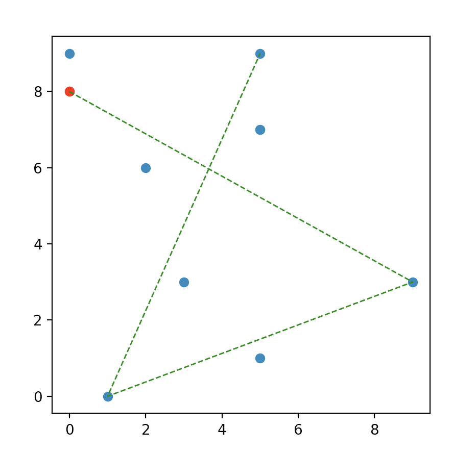

Mentor: Dr. Zhixu Su
TA: Chengyuan Ma
Undergraduate students: Caroline Ding, Zongze Li
Edited by: Caroline Ding
You can find my GitHub page here:
This script was developed as part of an undergraduate project (WXML - Washington eExperimental Mathematics Lab) at University of Washington in Autumn 2022. The project entitled “Analyzing the 'Shape' of Data - Persistent Homology” was mentored by Dr. Zhixu Su and PhD candidate Chengyuan Ma.
Topological data analysis uses techniques from topology to understand the ‘shape’ of data set, which can be high dimensional and noisy. Given a point cloud data set, one can construct a nested sequence of complexes thickening the data set at different scales. Persistent homology detects topological features of the complexes that persist over a range of scales, it computes the numbers of connected components, 1-dimensional holes (loops), 2-dimensional holes (voids), etc, and keeps track of the birth and death scale of the features.
In this project, we learned various methods of building filtered simplicial complexes and understood the standard algorithm for computing persistent homology. We wrote Python code to construct and plot Lazy Witness Complexes generated from a 3D point cloud data. In particular, we experimented with 3D data points synthesized from the implicit equation of a genus 5 surface.
Given a finite set of point \(S\) in \(\mathbb{R}^d\) with the landmark subset \(L\).
At each filtration value \(t\), two landmarks \(\ell_i\) and \(\ell_j\) are connected by 1-simplex
if there exists a witness point \(w\) such that:
$$\max \{ d(\ell_i, w), d(\ell_j, w) \} \leq t + \nu(w)$$
Where \(\nu(w)\) is the \(\nu\)th distance between \(w\) and its nearest landmark point (\(\nu = 0, 1, 2\)). Three landmarks are connected
by 2-simplex if every pair has been connected.
Generating a certain number of data points from a genus 5 surface equation.
If we have a huge data set, generating smaller number of simplices could speed up the construction of filtered simplicial complexes. Therefore, we can choose a subset of data points, called land-marks, that can still capture the shape of the original data set by applying the Sequential MaxMin Method.
Here is an output of four selected landmarks from 9 data points using Sequential MaxMin Method:
This figure shows the sequence of selecting the landmarks, starting from the red point.
Finding the distance of the \(\nu\)th closest landmark for each point in the data set.
Forming 1-simplex and 2-simplex by connecting the points and edges that satisfied the lazy witness complex criteria.